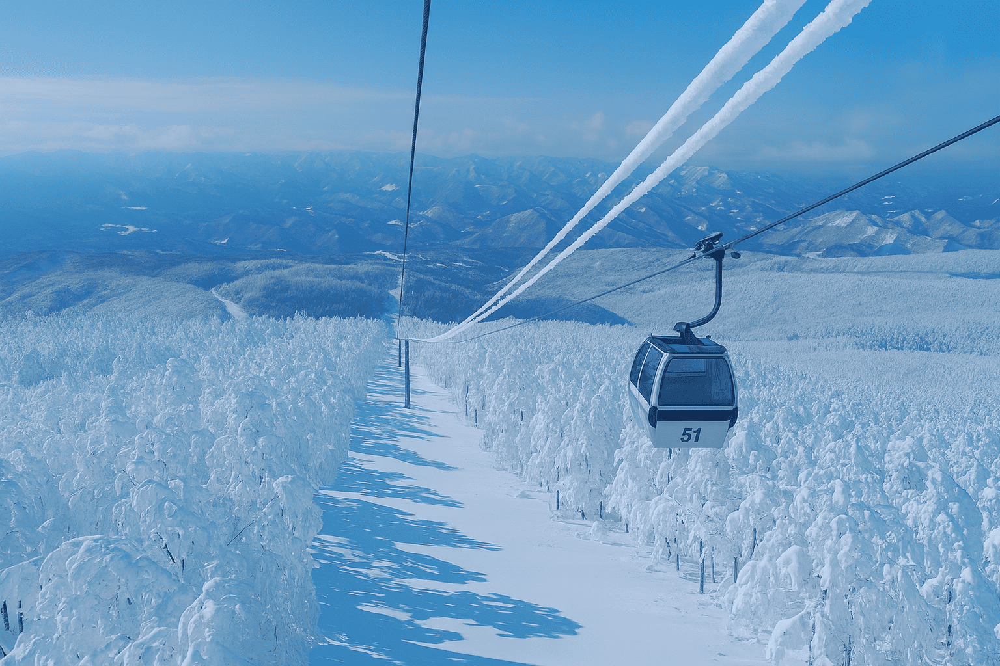
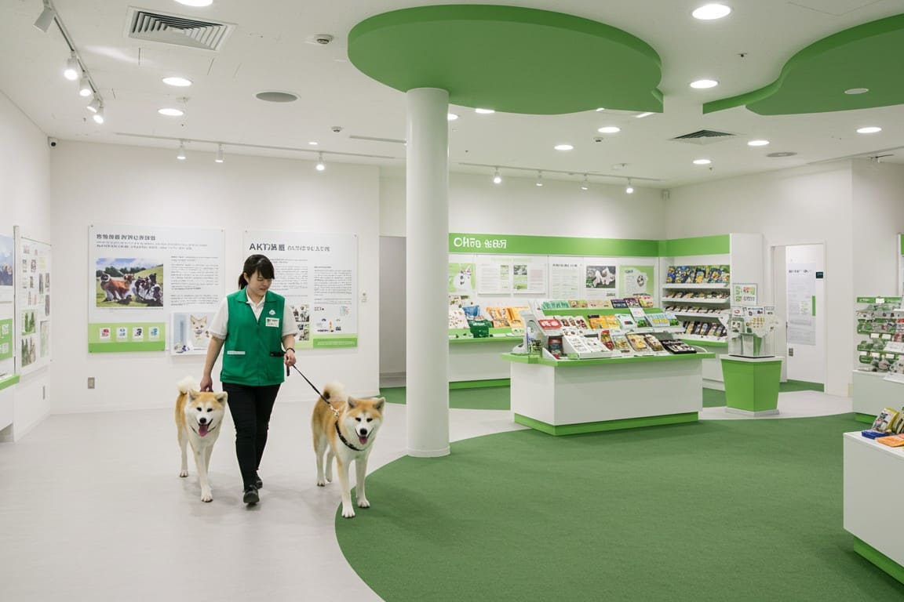
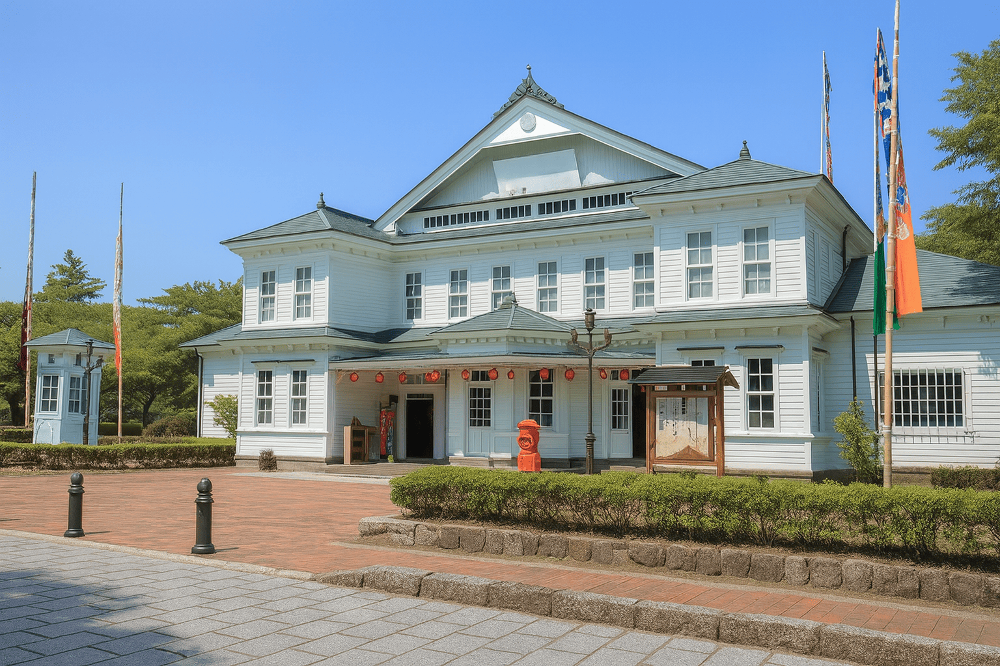
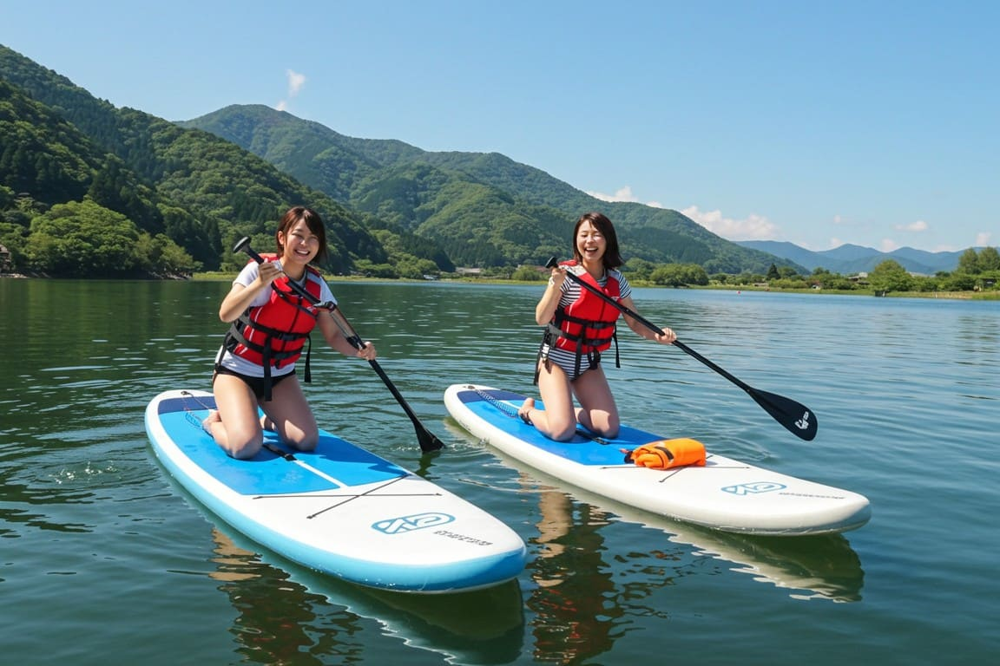

秋田県北の見どころスポット
秋田県北エリアは、雄大な自然と歴史ある文化が調和する魅力あふれる地域です。
ユネスコ世界遺産「白神山地」のブナの森や、青く澄んだ十和田湖、冬の幻想的な樹氷など、四季折々の景観が旅人を迎えます。
また、秋田犬と触れ合える施設や、明治時代の芝居小屋「康楽館」、伝統的な祭りなど、ここでしか味わえない体験も盛りだくさん。
自然に癒され、歴史に触れ、思い出に残るひとときを過ごせるのが秋田県北の魅力です。
-
 1
1花輪ばやし会館
大館市ユネスコ無形文化遺産「花輪ばやし」の山車や囃子を展示。祭りの熱気を一年中体感できるスポット。
公式HPを見る -
 2森吉山阿仁スキー場
北秋田市青く澄んだ湖面とブナの森に囲まれた絶景スポット。自然と一体になれるアクティビティが満載です。
公式HPを見る -
 3
3白神山地
藤里町世界遺産のブナ原生林。四季の彩りと清らかな空気に包まれ、非日常感を味わえる。
公式HPを見る -
 4
4留山
八峰町地元で守られてきた神秘的な原生林。静寂と緑に包まれる森林浴スポットで癒されます。
公式HPを見る -
 5
5角館の武家屋敷
仙北市黒板塀と江戸時代の建物が残る町並みで春は桜、秋は紅葉と四季の美景がゆったり楽しめる。
公式HPを見る -
 6秋田犬の里
大館市世界的に有名な秋田犬とふれあえる施設。愛らしい仕草と展示を通して癒しの時間を満喫。
公式HPを見る -
 7康楽館
小坂町日本最古級の芝居小屋で、今も現役の舞台が息づく場所。回り舞台など、明治時代の舞台装置を見学できます。
公式HPを見る -
 8十和田湖
鹿角市透明度の高い湖でカヌーや遊覧船が楽しめる、アクティブ派に人気の絶景スポット。
公式HPを見る